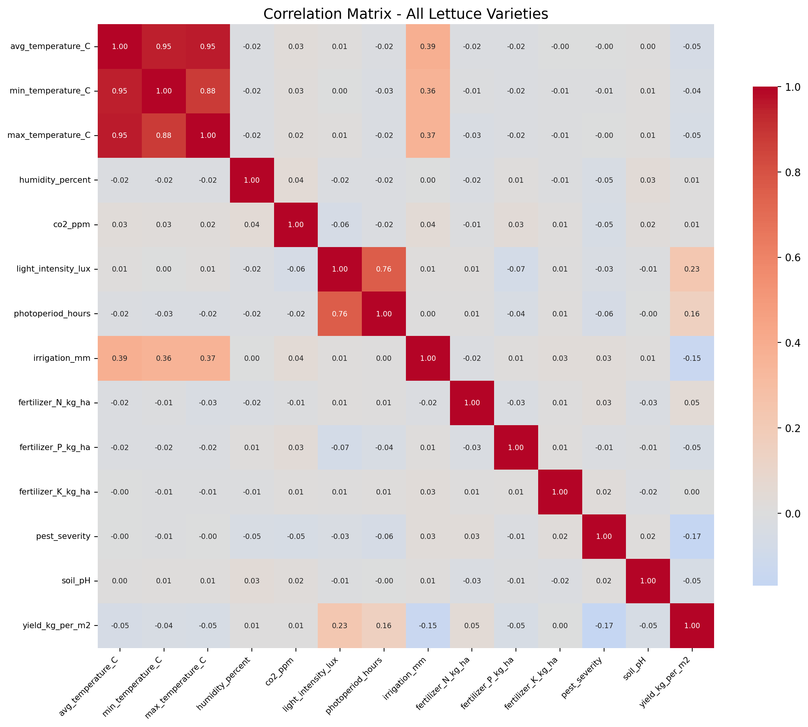
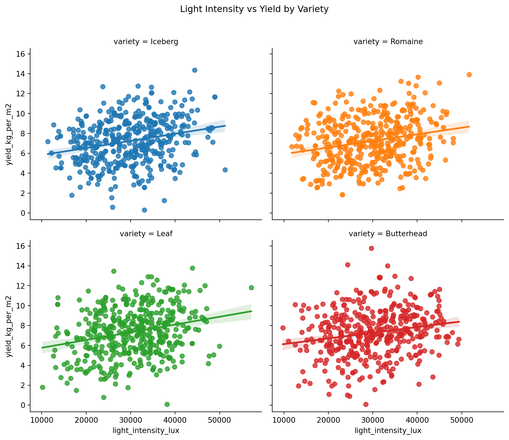
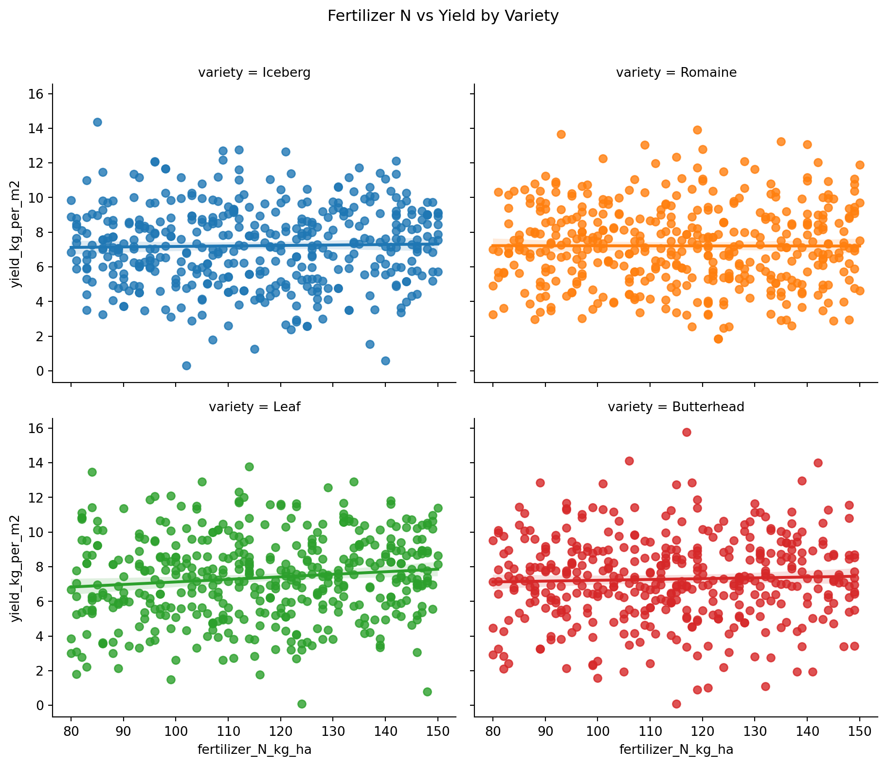
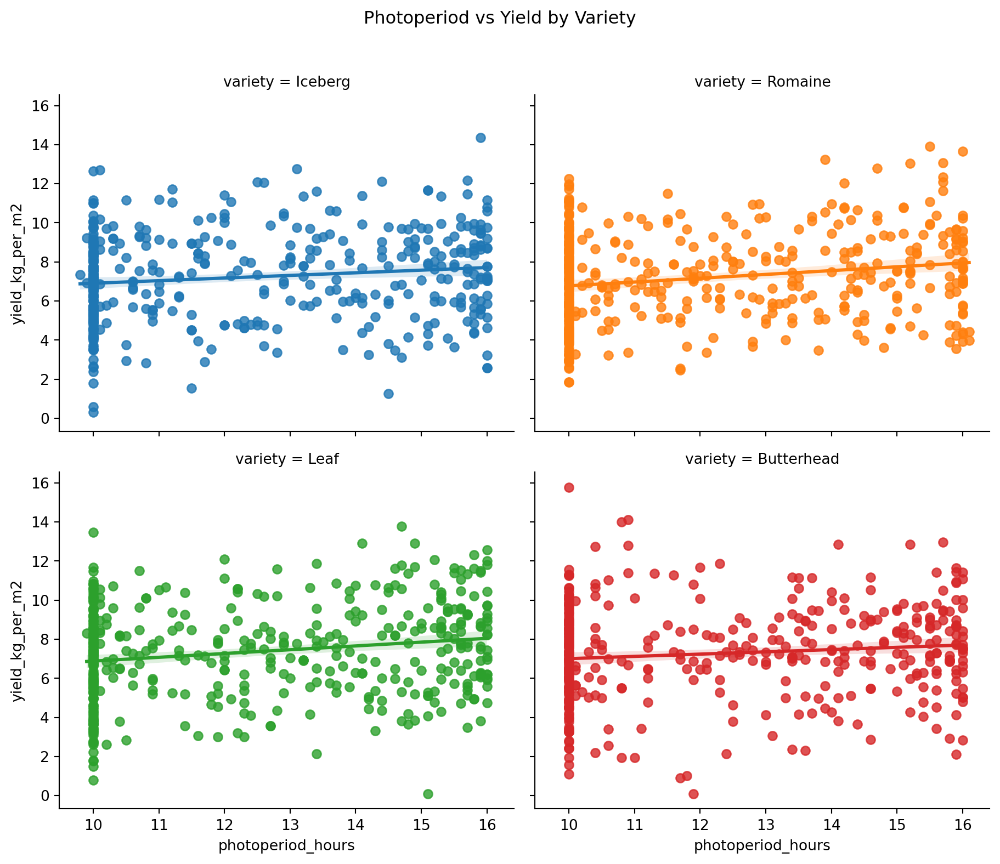
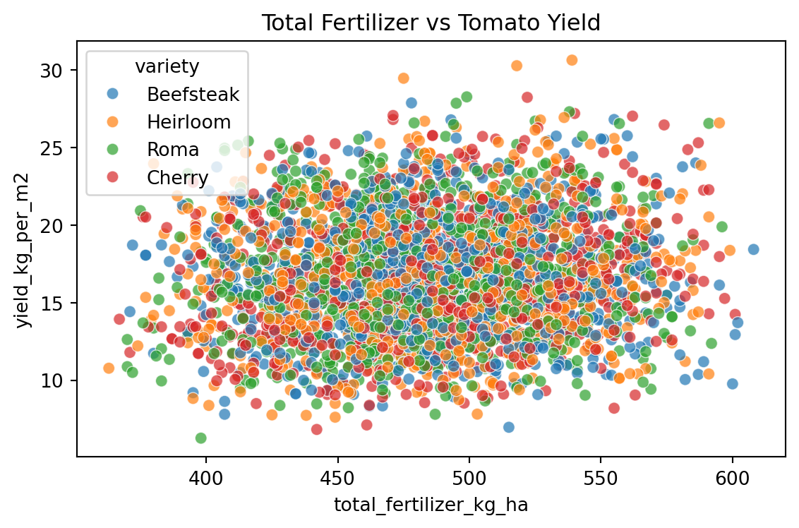
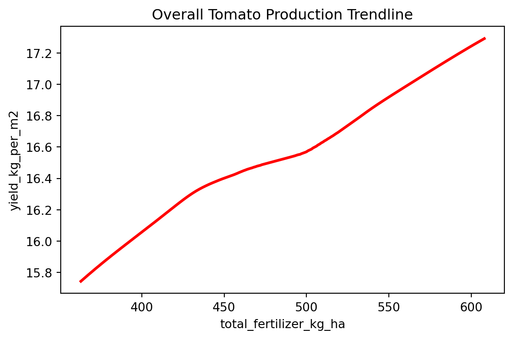
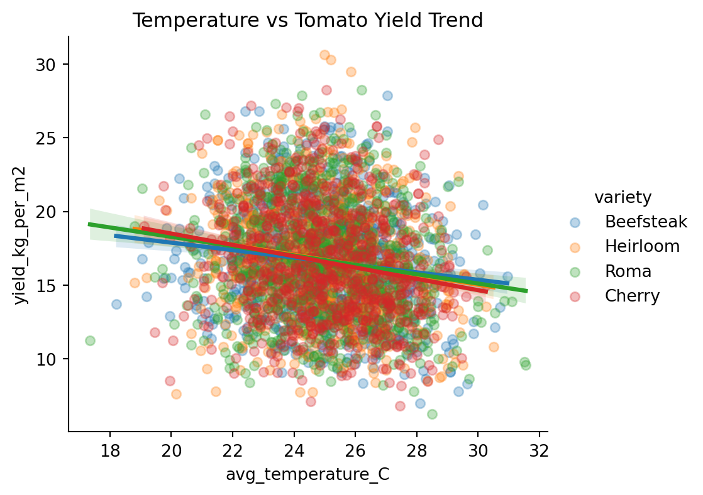
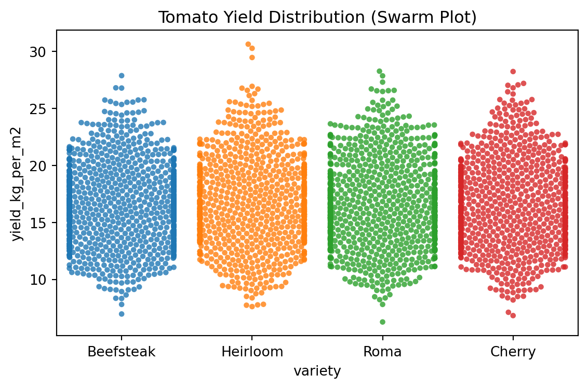

This dashboard explores the correlation between different inputs and the yield of different varieties of lettuce and tomatoes grown in a greenhouse. 20 columns with environmental conditions, management practices, and final yields. 4 crops: Tomato (40%), Cucumber (30%), Lettuce (20%), and Pepper (10%). 10,000+ rows of data. Target : model input conditions with yield data






| avg_temperature_C | yield_kg_per_m2 | |||||||||||||||
|---|---|---|---|---|---|---|---|---|---|---|---|---|---|---|---|---|
| count | mean | std | min | 25% | 50% | 75% | max | count | mean | std | min | 25% | 50% | 75% | max | |
| variety | ||||||||||||||||
| Beefsteak | 873.0 | 24.927721 | 2.027972 | 18.20 | 23.55 | 24.95 | 26.3500 | 30.95 | 873.0 | 16.638660 | 3.687893 | 6.96 | 13.8800 | 16.550 | 19.15 | 27.88 |
| Cherry | 809.0 | 25.016749 | 1.925632 | 19.10 | 23.70 | 25.00 | 26.4500 | 30.25 | 809.0 | 16.570519 | 3.909423 | 6.82 | 13.6200 | 16.180 | 19.36 | 28.24 |
| Heirloom | 815.0 | 24.990368 | 1.937827 | 18.80 | 23.70 | 25.10 | 26.3250 | 30.50 | 815.0 | 16.718859 | 3.926350 | 7.61 | 13.8750 | 16.420 | 19.37 | 30.64 |
| Roma | 830.0 | 24.992530 | 2.056313 | 17.35 | 23.55 | 24.90 | 26.4875 | 31.55 | 830.0 | 16.693446 | 3.924746 | 6.26 | 13.7325 | 16.465 | 19.31 | 28.27 |

